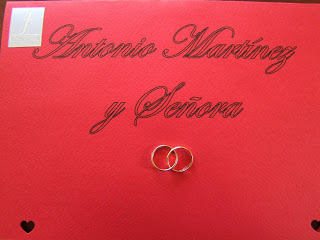

14 cosas que debes saber antes de vivir una boda chilena
- Matrimonios.cl: Matrimonios, Matrimonio
- Matrimonio - Registro Civil
- Casarse por el civil en Chile, ¿Qué hay que hacer . - Bodas
- Cuánto cuesta organizar un matrimonio en Chile: ¡los gastos .
- Matrimonio en Chile - Wikipedia, la enciclopedia libre
- Venta Especial Bodas: Feria de Novios Mayo 2021
- Coronavirus Chile | El cura y los novios fueron detenidos en .
- Insólito: arrestan a un cura y a novios por realizar una boda .
- Los 10 mejores lugares de eventos para matrimonio en .
- Una Boda o Casamiento Tradicional en Chile - Pepe's Chile

LUGARES México América del Sur América Central España Estados Unidos y Canadá Resto del mundo Guías de Ciudades TEMAS Viajar con niños Aventura Identidad Viajera Identidad Cultural Comidas y bebidas Lenguajes Naturaleza Mundo pre-hispánico Género y Sexualidad Bienestar Arte Deportes Editores Trending Videos View All Videos Patrocinado
On the road with Uncle Russ
02:40 3 May 2021Faka'apa'apa
14:06 22 Apr 2020 PatrocinadoTravel Different with Camping World
01:06 1 Apr 2021[Who Knows Where: Episode 3] Aruba
10:41 11 Feb 2020 Descargar más Our Trips Creators Travel Map Sign In / Join Destinations Video travelstoke Matador Trips EN Crédito: nosotrosloschilenos14 cosas que debes saber antes de vivir una boda chilena
Chile Crédito: nosotrosloschilenos Dani Paz Ibaceta 20 Sep 20161. Un evento no es suficiente.
No nos basta con tener sólo un día de celebración… así que últimamente celebramos el matrimonio civil y el matrimonio religioso por separado. El civil (o legal) se celebra íntimamente con la familia y amigos cercanos, normalmente en la casa de alguno de los novios. Se celebra días, semanas o incluso meses antes del matrimonio religioso, y en él los novios firman el contrato nupcial y se les entrega su libreta de matrimonio, transformándolos oficialmente en familia. Comemos, conversamos, nos reímos y lloramos, pero reservamos la fiesta y las tradiciones para el matrimonio religioso.
2. El matrimonio religioso requiere de más producción que una Alfombra Roja.
No son sólo los novios los que se preparan para el evento con idas al gimnasio y dietas: también todas las amigas y mujeres cercanas a los novios se preparan para el evento con semanas de anticipación. ¡La elección del vestido, los zapatos, el peinado y los accesorios de los novios y las invitadas es planificada con mucho tiempo! Que no te extrañe sentirte como en una alfombra roja, porque todas buscarán brillar ese día, acompañando en sentimiento a la novia.
3. La novia es la última en llegar a la Iglesia, en un “carruaje” en sintonía con su personalidad.
Quizás este transporte especial sea un auto antiguo, un carruaje tirado por caballos, o un auto ultra moderno. El carruaje deja a la novia en la Iglesia y espera a la pareja hasta el final. Al terminar la ceremonia, los novios -juntos por primera vez- se irán en su carruaje galopando hacia el horizonte (o simplemente al lugar de la fiesta).
4. Participarás de un pequeño ritual de abundancia y felicidad antes de abandonar la Iglesia.
Al terminar la ceremonia, los invitados se posicionan fuera de la iglesia armando un pasillo humano cargado de flores y papeles de colores. Cuando los novios pisan el exterior de la iglesia, una lluvia de papelitos o pétalos son lanzados al cielo, dándoles la bienvenida a su vida de casados con símbolos de abundancia y felicidad. Las mejores sonrisas de los novios aparecen bajo esta cascada de amor.
5. La ceremonia estará pensada para hacerte llorar.
La emotividad es la primera emoción que buscamos compartir en nuestra boda. Ser capaces de transmitir el amor que une a la pareja es sinónimo, en Chile, de lágrimas y abrazos. Mientras más llanto haya, más inolvidable será la boda. Y no te preocupes, tus lágrimas serán bien recompensadas durante el resto de la noche con mucha diversión.
6. Serás testigo de un robo épico.
El primer baile de la noche es protagonizado por la novia y su padre al centro de las miradas y suspiros de los invitados. Luego de un par de minutos, el novio se acercará, sigiloso, e interrumpirá el baile, robándole la novia a su suegro. Todo esto se teatraliza aún más: el padre se despide, ocultando su dolor entre risas, y busca una nueva pareja. El secreto del novio es ser cuidadoso al momento del intercambio, ya que corre el riesgo de perder el cariño del suegro para siempre.
7. Todo el esfuerzo de la dieta previa al matrimonio será recompensado con un banquete (o varios).
Ya sea de día o de noche, luego de la ceremonia religiosa, preparamos nuestros estómagos para el banquete. Dependiendo de los gustos (y presupuestos) de los novios el banquete puede comenzar con un cocktail interminable de empanaditas, sopaipillas con pebre y canapés o una elegante entrada de ceviches, cremas y ensaladas. El plato de fondo siempre lleva un tipo de carne (pescado, pavo, pato, bife o incluso conejo). No te extrañes si en un matrimonio te esperan asados o corderos al palo; esto se está transformando en una nueva tradición.
Y lo más importante: el momento de los postres. ¡Mesas interminables con postres pequeñitos para probar de todo! Mousse de diferentes sabores, pie de limón, cheesecake de maracuyá, tortas, cupcakes, frutas con chocolate, helados y ¡más chocolate! Así que a la hora de la comida, busca tu mesa asignada, afila los cuchillos, levanta las copas y prepárate a devorar todo lo que se cruce en tu camino. Necesitarás energía y un estómago lleno para continuar bailando (y tomando) toda la noche.
Y si crees que el hambre puede atacar nuevamente en la madrugada, ¡no te preocupes! Los novios, que han pensado en todo, han preparado un buen “Bajón” de completos, hamburguesas, pizzas o lo que se te antoje en la última comida de la noche, esa que te salvará de la caña (o resaca) de la mañana siguiente.
8. Pasarás por todos los estilos musicales de la vida de los novios, desde las coreografías del axé, hasta las cumbias y bachatas, de manera que terminarás perreando “Hasta abajo, ¡Hasta abajo!”
Una vez llenados los estómagos es hora de poner los pies en acción. Bailamos en pareja, en grupo, hasta tocar el suelo, en círculos, dando saltitos, en fila india y haciendo el trencito. Las mujeres nos preparamos para bailar toda la noche y a mitad del baile nos cambiamos los zapatos de taco por unos más cómodos para bailar hasta el día siguiente. Acá bailamos todos, jóvenes, viejos y niños, nadie se queda sentado.
9. Te cansarás de escuchar una frase: ¡Al seco!
El combustible para bailar toda la noche es alcohol, y este fluye constante y gratuitamente toda la noche. Partimos con cervezas, vino y champaña, algo tranquilito. Pero a medida que avanza la noche aparece la reina del lugar: La Piscola. Ese brebaje refrescante de hielo, pisco y cola aparece en la mano de todos los invitados, mientras se escuchan los gritos de “al seco, al seco, al seco!” obligando al elegido a tomarse el vaso completo. No te preocupes de guardar la compostura: una vez iniciada la fiesta, el decoro se guarda en el bolsillo.
10. Las solteras deberán afilar las uñas, mientras que los solteros tendrán que soltar las corbatas.
En Chile nos tomamos en serio el lanzamiento del ramo. Se agrupan las solteras de todas las edades: algunas se hacen rogar (ya que no quieren mostrarse demasiado interesadas), mientras que otras se ganan a codazos su lugar en primera fila. Los hombres, por su parte, “dramatizan” el momento rogando que sus parejas no agarren el ramo. El ramo, ese símbolo de “futuro matrimonio”, juguetea en la mano de la novia, la cual invita a las mujeres a bailar los clásicos “Girls just wanna have fun” y “All the single ladies”, hasta que se decide por hacer volar el ramo por el salón hacia las mujeres desesperadas. Algunas le hacen el quite, otras lo agarrarán desde donde puedan, se lanzarán al suelo y forcejearán si es necesario. Lo cierto es que en Chile, no existen los lanzamientos aburridos.
Los hombres no se quedan atrás. Lanzar la liga va en retirada, ahora lo que se estila es lanzar una caja de alcohol hacia el tumulto de hombres solteros. Acá, nadie se hace de rogar, los hombres activan todas sus hormonas para bailar al ritmo de algún tema ska o punk, dependiendo de los gustos del novio. Todos quieren ganarse esa caja de cartón que promete una botella personal del mejor alcohol de la noche. Es tan deseado que incluso los hombres casados tratarán de colarse al evento. Serás el hijo ilustre del matrimonio si es que tienes la suerte de sujetar esa caja entre tus manos.
11. Cuando la fiesta está en su apogeo y el copete (alcohol) no ha parado de fluir, es hora de hacer volar al novio por los aires.
El tradicional malteo es espontáneo, el novio no lo está esperando… incluso ruega en silencio que sus amigos olviden esta vergonzosa (y a veces dolorosa) tradición. Los hombres se acercan y se posicionan alrededor del novio. Le quitan el vaso de la mano y uno en cada extremidad lo toman y lanzan hacia arriba, ocupando toda la fuerza posible para hacerlo llegar cada vez más alto. El novio debe entregarse al frenesí y rogar porque las fuerzas de sus amigos cesen rápido. A pesar del vuelo, las patadas y coscachos que el novio puede recibir en este momento, las risas y abrazos terminan haciendo olvidar cualquier nerviosismo o dolor.
12. Más que comida, música y emotividad, hay algo que nunca falta: ¡fotos, fotos y más fotos!
Fotos maquillándose, fotos peinándose, fotos viendo el celular. Fotos entrando a la iglesia, en la ceremonia, intercambiando los anillos. Fotos bajo la lluvia de colores, fotos alejándose en el auto, fotos riendo, fotos llorando. Sesión de fotos románticas antes de llegar a la fiesta. Fotos en el brindis, en el vals, en la cena, fotos con los padres de los novios, con los hermanos, con los perros. Con todos los invitados mesa por mesa, en la fiesta!. Uff… un fotógrafo de matrimonios está en la obligación de captar cada momento si es que no quiere sufrir las consecuencias de perderse todos los momentos únicos. Y eso no es todo. El fotógrafo sacará fotos toda la noche, pero los invitados… los invitados aún más.
13. Un elemento reactiva el ánimo de todos los invitados, haciendo que la fiesta perdure.
Se trata del cotillón, ¡claro! Lentes de colores, pelucas, gorros con escarcha, corbatas chistosas, cintillos con mensajes eróticos, pitos, maracas y un sinfín de elementos coloridos llenan el salón y adornan a los invitados. Cuando el cotillón aparece, el ánimo de los invitados, ya desgastado por tanto baile, activa su turbo. La fiesta se prende, y hombres y mujeres se mantienen bailando cada canción como si el mundo fuera a acabarse.
14. A los chilenos nos gusta ponernos creativos en las bodas, así que prepárate: todo puede pasar.
Si bien nuestros matrimonios tienden a ser tradicionales, últimamente nos atrevemos más seguido a desafiar los parámetros establecidos. ¿Llegar a la iglesia en moto? Por qué no! ¿Hacer un cocktail en vez de una cena? No es mala idea! ¿Fiesta el día del matrimonio civil? A quién le hace daño! Las bodas chilenas pueden comenzar a las 12 del día y terminar a las 2 de la mañana, o pueden comenzar a las 8 de la tarde y terminar a las 10 de la mañana. Nos gusta ponernos creativos, podemos cambiar las tradiciones, los horarios y los hitos, pero lo que nunca, nunca sufrirá cambios, es que nos gusta carretear y eso lo vivirás de seguro.
Etiquetado Chile boda Chile chilenos Tradiciones CONSEJOS DE VIAJE Identidad Cultural LUGARES
Trending Now
11+ expresiones esenciales que tienes que dominar antes de visitar Chile 20 frases típicas venezolanas cuyo curioso origen probablemente no conoces 43 frases sobre el amor verdadero 10 frases venezolanas que solo nosotros entendemos 20 poemas de amor en español escritos por mujeresMore on
Chile
8 grandiosas estatuas dedicadas a Jesucristo (que no son la de Río de Janeiro)
10 Apr 2020 Alita Lavín10 típicos dulces chilenos que debes probar en tu próximo viaje
13 Oct 2018 Fran Norero14 señales de que creciste en Valparaíso
6 Jun 2018 Fran Norero10 paisajes chilenos de cuento para declarar tu amor
25 Jun 2018 Fran Norero10 actividades extremas que hacen de Chile el mejor destino para los aventureros
2 Aug 2018 Fran NoreroLas 17 dudas más comunes sobre Chile y los chilenos (según Google)
20 Aug 2018 Fran Norero11 ciudades de Sudamérica donde volar desde Santiago por menos de 160.000 CLP
20 Aug 2018 Fran NoreroPlanifica tus viajes para participar de las más lindas fiestas costumbristas de Chile
10 Sep 2018 Fran NoreroLas 8 costumbres de las fiestas patrias chilenas que más nos asombran a los extranjeros
12 Sep 2018 Alesandra Tovar10 expresiones que los chilenos usamos para referirnos a la muerte
18 Oct 2018 Fran Norero Facebook Instagram Matador Network © 2006-2021 Advertise With Us Terms of Service Privacy Policy ✖ travel stoke Download the mobile appstoked by
Save Bookmark Utilizamos cookies para entender cómo usas nuestro sitio y mejorar tu experiencia en el mismo. Esto incluye la personalización de contenido y publicidad. Para más información sobre cómo utilizamos cookies, por favor lee nuestra Política de Privacidad y Condiciones Generales de Servicios . Desactivar cookies Acepto
